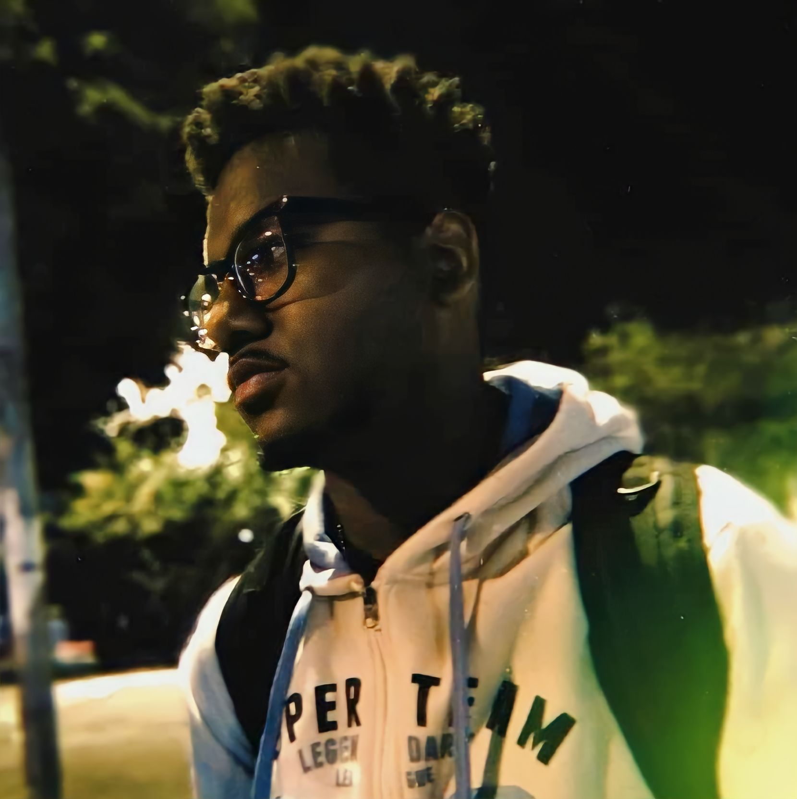
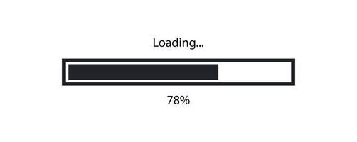
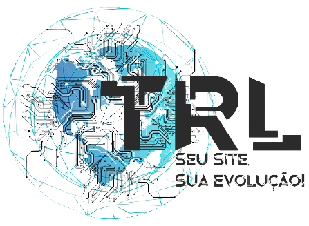
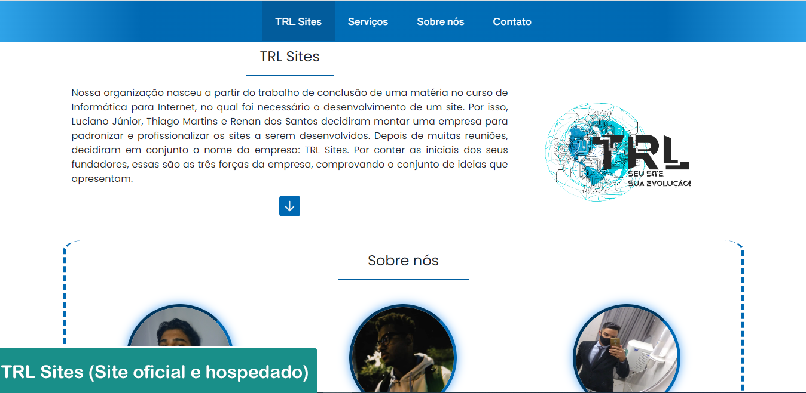
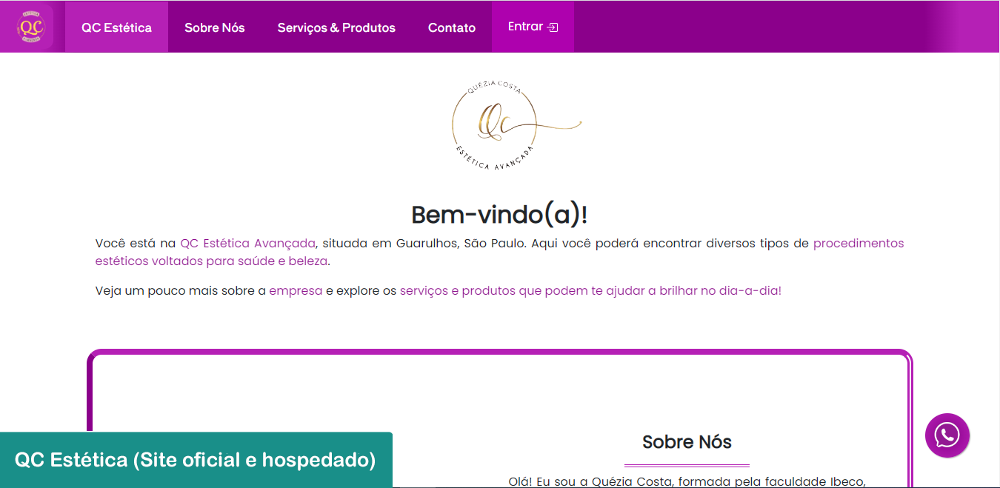
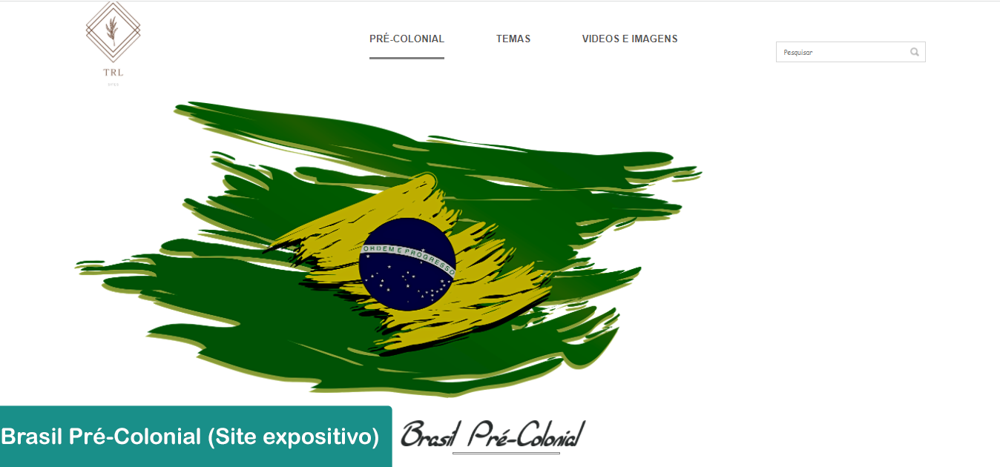
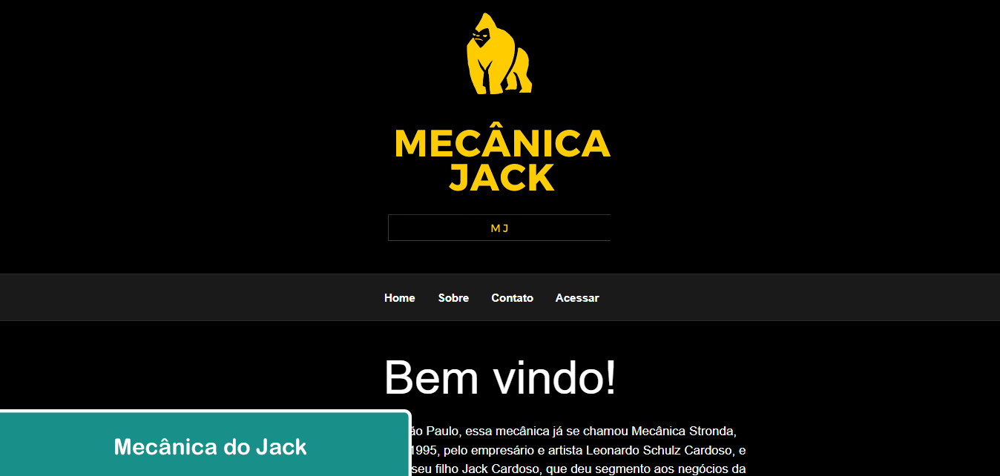

Você está na minha página pessoal, espero que goste!
Abaixo estão algumas das minhas informações.
✱ Sessão 1 - Informações Pessoais ✱
Informações Pessoais

Nome: Renan Siqueira dos Santos;
Data de nascimento: 18/06/2003;
Nacionalidade: Brasileiro;
Local de nascimento: Guarulhos - SP;
Local de residência: Uberlândia - MG;
Gênero Sexual: Masculino.
Algumas informações básicas sobre mim.
Hobbies
Quando não estou em um momento de estudo, as coisas que eu mais gosto de fazer são: ouvir música, assistir vídeos no Youtube, jogar jogos (isso aqui eu faço muito) ou assistir a algum jogo de futebol ou basquete.
Meu momento de descanso e de prática de atividades é importante para limpar a mente e me manter disposto fisicamente também.
Alguns hobbies, ou seja, coisas que eu gosto de fazer no meu tempo livre.
✱ Sessão 2 - Formação ✱
Formação Acadêmica
Ensino Fundamental (1° ao 9° ano): E.E. Agostinho Cano.
Ensino Médio - Técnico Profissionalizante em Informática para Internet (1° ao 4° ano): Instituto Federal de Educação, Ciência e Tecnologia de São Paulo (IFSP Guarulhos).
Ensino Superior - Bacharelado em Jornalismo (1° ao 8° período): Universidade Federal de Uberlândia.
No momento, estou no quarto período de bacharelado em Jornalismo.

Algumas informações sobre minha formação acadêmica.
Competências
Linguagens (de marcação e programação) e ferramentas conhecidas: HTML, CSS, JavaScript, PHP, SQL, Python, jQuery, AJAX, Bootstrap (4 e 5), Microsoft Office (Word, Excel, PowerPoint);
Habilidades (Tecnologia da Informação): Gestão de projetos, suporte em hardware e redes, programação para web, e criação de identidade visual; Habilidades (Jornalismo): Redação de notícias, roteiros (para podcast e entrevista) e criação de textos em geral em demanda.
✦ Idiomas
Língua Inglesa: Nível intermediário;
Língua Espanhola: Nível básico;
Algumas das minhas competências, principalmente relacionadas à área da tecnologia e redação.
✱ Sessão 3 - Experiências ✱
Experiência Acadêmica/Profissional

Anteriormente, fui desenvolvedor Front-end da TRL Sites, uma empresa não-oficial criada por mim, em conjunto com outros dois colegas, para o projeto de formatura do curso de Informática para Internet. Juntos, programamos nosso website oficial, bem como um website profissional e seguro para a empresa QC Estética, sendo esse o trabalho de conclusão.
No primeiro período de graduação em Jornalismo, pude ter a oportunidade de entrar para o projeto Arquibancada UFU, que é um projeto de extensão voltado para cobertura jornalística de esportes universitários. Atualmente, sou integrante da equipe de redação e coordenador de rádio, produzindo episódios do podcast chamado ArqCast. Segue o link para o site do projeto: Arquibancada UFU - Site
No segundo período, entrei para o projeto UFocas, que é outro projeto de extensão, fruto de uma parceria institucional entre a coordenação do curso de Jornalismo e os órgãos de comunicação oficial da UFU — a Diretoria de Comunicação Social (Dirco) e a Fundação Rádio e Televisão Educativa de Uberlândia (RTU) —, e que garante oportunidades de atuação para estudantes nas diversas atividades ali executadas. Durante quatro meses, fiz parte da equipe de Divulgação Científica, auxiliando na produção de materiais em formato de texto ou áudio, como o podcast Ciência ao Pé do Ouvido. Na retrospectiva do setor em 2024, entre as cinco notícias de divulgação científica mais lidas do portal Comunica UFU, duas foram produzidas por mim.
No terceiro período, entrei para o projeto Tiro Livre, que realiza a cobertura jornalística do Praia Clube em diversas modalidades — como vôlei, futsal e atletismo — e do Uberlândia Esporte Clube, o time profissional de futebol de campo. Além disso, o projeto conta com um programa de rádio que cobre tudo o que está acontecendo em diversos outros campeonatos profissionais, como Champions League, NBA e NFL. Atualmente, faço parte da equipe de redação, locução e marketing. Segue o link para o perfil do projeto no Instagram: Tiro Livre - Instagram
Também criei, junto a outros colegas, o projeto Câmara Escura, que é um blog voltado para a cultura pop, mais especificamente para filmes, séries e animes. Assim, utilizamos o blog e o perfil nas redes sociais como plataformas para postagem de notícias, análises e diversos outros conteúdos sobre esses setores. Segue o link para o perfil do projeto no Instagram: Câmara Escura - Instagram
Por fim, estou sempre buscando novas oportunidades tanto dentro da universidade, quanto externamente, no mercado profissional de TI ou de Jornalismo, já que mantenho os estudos voltados para as duas áreas regularmente.
Algumas informações sobre minha experiência acadêmica e profissional.
Portfólio
🔵 Tecnologia da Informação
Estes são alguns dos trabalhos que já realizei na parte de desenvolvimento de sites para web:




🟠 Jornalismo
Meus trabalhos na área do Jornalismo estão organizados em um documento, que pode ser acessado clicando no seguinte link: Portfólio - Jornalismo
Contato
Abaixo, estão os outros meios pelos quais posso ser contactado: